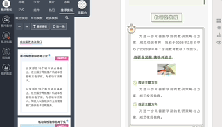
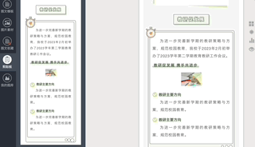

从 Word 文档到推送：制作微信推送的一般过程¶
补充阅读材料
本章节会有一些补充阅读材料，它们的形状与本蓝色文本框相似，包含了一些有用的概念解释以及背景信息等。同学可点击文本框上部的蓝色部分进行补充材料的展开与收起，避免影响阅读正文。
微信推送的本质
尽管与我们常用的手机浏览器有一定的区别，微信（在阅读推送时）从本质上来说仍可认为是一种浏览器。一篇推送则是按照微信平台的要求和格式进行排布的网页。
微信推送的内容实际上是经过特定格式编写的数据。这些数据可以包含文本、图片、链接等元素，它们被组织和呈现的方式类似于网页的结构。推送的文本会在微信客户端中以特定的字体样式显示，图片会被加载并显示在相应的位置，而链接则可以被点击跳转到对应的网页或小程序页面。
与传统浏览器相比，微信客户端对推送内容的渲染和显示规则可能有所不同。微信平台会对推送消息的排版和样式进行调整，以适应其自身的用户界面（如手机宽度）和交互方式。这意味着推送在微信客户端中的呈现可能与在传统浏览器中的显示略有不同。
微信推送的另一个重要特点是，它具有一定的交互性。用户可以通过点击推送中的链接或按钮与推送内容进行互动，例如跳转到相关网页、展开详细内容以及隐藏显示等。这种交互性使得推送不仅仅是静态的信息展示，而是与用户之间进行了一定程度的互动和连接。
了解微信推送的本质和工作原理，有助于我们更好地利用微信平台提供的功能和特性，设计出更具吸引力和互动性的推送内容，与用户建立更紧密的连接和沟通。
要制作一篇微信推送，最适合学生骨干使用的平台是秀米（https://xiumi.us/），使用秀米进行微信推送排版的操作几乎是傻瓜式的。不过，面对秀米平台琳琅满目的功能，初学者一般会觉得无处下手。因此，本节会简单地教大家使用秀米的一些基础功能，其他功能请同学在排版的过程中自行探索。
注册秀米账号，创建第一个图文¶
相关名词解释
一般指的是微信公众号每天一次发出的消息，如图所示。
一篇图文（或称推文）则是我们一般口头所说的“一篇推送”。事实上，一次推送可以包含一个或多个图文，如图所示的推送就包含了三篇图文消息。除了图文消息之外，微信公众号还支持发送纯文字、视频等其他类型的消息，这些消息和图文消息是并列的，都可以混搭在一次推送中推送给用户。
本小节采用的示例 Word 文档下载
访问秀米的网站（https://xiumi.us/），点击右上角登录，进行账号的注册。注册并登录后，点击右上角的用户名-账号设置可查看本账号绑定的手机号和邮箱，以供日后与其他人进行信息互传。
要新建一篇图文推送，有两种方式。
- 使用左侧的挑选风格排版，可以使用其他人已经做好的风格
- 优点：只需要替换文本、图片等内容即可
- 需要注意的点
- 有的风格排版是需要付费的，校学生会的秀米账号会开通会员，同学们在【价格】选项卡中选择【会员模板】或【免费】即可使用。
- 需要提前阅读 Word 文档，搞清楚本文需要哪些组件，如小标题？文本框？图片是单图还是多图？选中风格后需要查看是否有对应的组件，否则就应该挑选其他的风格。
- 使用右侧的新建一个图文，可以从零开始挑选各种组件，自行排版
- 优点：排版时比较灵活
- 需要注意的点
- 如果打算从零开始，往往不能再选择一个风格。这个模式提供的组件样式比较有限，模板也比较有限，容易和其他推送的样式撞车。
选择一个方式，点击，进入第一个图文的编辑。下面会以文章开头提供的 Word 文档为例，用这两种方法来排版。两种方法的排版中都会涉及到一些排版的基础知识点，所以请按照顺序阅读，同学们可以边阅读边打开秀米平台实操。
挑选风格排版¶
我们的文案主题是迎新晚会主持人招募，因此我们选择下面这种风格进行排版。
挑选风格时要注意的三个原则：
- 选择合适的、符合主题的风格，比如一些主打夏令营主题的风格就会带有一些夏令营主题的贴纸，这与我们校园通知的主题不甚符合，如果全部删除又让整个页面显得单调，因此最好能让风格原有的设计元素直接为我们所用
- 左侧预览风格，确保风格包含自己所需要的所有组件
- 挑选风格时也要考虑公众号的身份，如学生会的公众号不宜使用插画过多、过于商业化的风格，适宜使用清新简约的风格
点击右下角的【另存给自己】，这个风格就会以样板副本的形式保存到网页上端左上角【我的图文】中。点开【我的图文】，把鼠标放在我们新保存的样板副本封面上，此时会出现三个按钮。点击中间的【编辑】即可进入推送的编辑页面。
在正式编辑之前，有必要介绍一下秀米平台对图片的管理。
我们可以先把推送要用到的所有图片上传到图库中。在编辑界面，点击左侧【我的图库】，然后点击【上传图片（无水印）】即可从本地挑选本次排版所需要的所有图片上传到图库。
快速从 Word 文档中获得所有的图片素材供批量上传
众所周知（吗），.docx 文件是具有特殊结构的，将 docx 文件拓展名修改成 zip，然后用解压缩软件解压就可以看到内部结构。
Word 文档包含的所有多媒体文件（如图片、视频、声音等）都放在解压后的 word/media/ 文件夹中，因此在上传图库时可以直接导航到这个文件夹，选中所有图片直接上传。
参考资料：DOCX文档结构分析 - CSDN
秀米的图片替换逻辑是，先在右侧点击需要更换的旧图片，再点击左侧图库或剪贴板中要替换的新图片。
设置图文信息¶
在右侧界面划到最上方，即可编辑图文信息。上方三个板块分别是：封面图、标题、简介。
- 修改封面图：点击正方形的封面缩略图，然后再点击左侧图库中的图片即可替换。实际上，我们建议将图文转存到微信公众号平台后再进行封面的上传。这里提前替换封面，一个是没有封面不允许转存到微信公众号平台；二个是当你打开【我的图文】界面时，可以通过封面图快速定位自己想找哪篇图文。
- 修改标题
- 修改简介：简介文字出现的场合有两个，一个是当这篇图文单独成为一篇推送时，推送消息下方会显示简介；二个是当用户在其他平台，如QQ群转发这篇推送时，转发的消息气泡上会显示简介。所以要想做的完美，简介不能不填或者含糊。
- 如果简介不填，在上述所说的两个场合则会自动抓取文章的开头若干字作为简介，这很不好看；而且因为用了风格，文章的开头若干字可能不是正文，而是一些排版定位用的字符码，如
 等，给用户造成很不好的印象。 - 所以，建议大家用一句话到两句话总结文章内容，注意不要与标题、封面图中所含的信息过于重复。
- 如果简介不填，在上述所说的两个场合则会自动抓取文章的开头若干字作为简介，这很不好看；而且因为用了风格，文章的开头若干字可能不是正文，而是一些排版定位用的字符码，如
修改这三个信息即可，修改后的情况如图所示：
根据内容排版¶
接下来，我们需要根据 Word 内容分析哪些内容该填到模板的什么位置。为此，我们先来看看右侧模板的组成。
点击标题的位置，会发现蓝色框选中了整个标题部分。从这里我们可以一瞥微信推送元素的基本组织方式：长方形的组件自上而下堆砌。
组件的操作：
- 组件可以复制到剪贴板，然后从剪贴板拖动到右侧你想要的位置。
- 选中组件后，菜单中可以点击【后插空行】，在组件后方插入一个空行，避免组件与组件之间挨得过于紧密。注意【空行】不属于组件，不会随组件一同复制。
接着，我们来对比一下模板和文案，将文案填写到合适的模板组件中。
接下来，将文案填入组件模板中。在此期间，你可能会遇到以下问题：
-
模板中原来提供的组件数量不够用
- 使用鼠标单击选择或者框选你想要复制的组件到剪贴板，然后从剪贴板中拖拽复制的组件到相应的位置，如下方 GIF 所示

-
你想删除组件中的某些小的子组件，发现无法选中
- 点击右上角田字形的按钮，即可进入布局模式操作（此时按钮变成九宫格），如下方 GIF 所示；再次点击九宫格按钮可退出此模式

-
使用 ctrl-c ctrl-v 复制的文字与模板原来的字体样式不一致
- 先不要删除模板原来的文字，在模板文字后面鼠标右键，选择【粘贴并匹配样式】或者【粘贴纯文本】，然后再删除原来的模板文字
同学们在尝试排版时，可以灵活使用上述三个小技巧。
填好文案后的推送：参考
新建一个图文¶
同学还记得创建一个图文的两种方式吗，现在我们介绍第二种方式。
点击【新建一个图文】，加载之后也会到同样的编辑界面，不同的是这个界面是空的，你需要自己填写图文信息以及创建组件。
左边的【图文模板】栏中有许多可以直接使用的组件，请你选择符合主题的组件，拖拽到右边进行修改，堆砌组件即可完成排版。
核心的操作流程在上一节已经完成，下面节选一些秀米官方提供的常见问题：
SVG 格式的图片无法上传¶
在添加 svg 图片的时候，如果是从本地文件夹添加，点击【上传图片】后，在弹出的文件夹里，需要先把文件夹【选项】里的【格式】改为【所有文件】。
这样才能点击选中 svg 格式的图片，不然是无法选中的。
如何快速换色¶
给内容加模板的时候，我们可以先给模板设置主题色，统一模板的主色调；加完模板之后，如果觉得配色不满意，可以使用全文换色功能一键换色。
如何设置主题色
在编辑区域左侧模板区右上角有一块突出的地方，有个颜色圆圈，圆圈下面写着主题色：
主题色我们可以理解为配色方案的主色调，比如你的整体排版想要用蓝色系的颜色，那么就可以把主题色设置为蓝色。
设置主题色之后，模板区的模板颜色就会统一换成你设置的主题色调：
这里需要注意一下：可能有些模板里带有SVG图等原因，部分元素没有被感应上主题色，如果要用这些模板的话，添加到编辑区域手动调整下颜色就可以啦。
设置主题色后，想要恢复到系统模板原有色调，可以点击颜色圆圈下边的清除按钮，即恢复原样：
如何全文换色
选中内容，点工具条上的颜色圆圈，在调色板左下角有一个“全文替换”，先勾选它，然后再去点你想要替换成的颜色：
就可以把文中所有用到该颜色的内容替换成新的颜色。一定要记住是先勾选“全文替换”，再去选择新的颜色。
另外，渐变色目前还不能够使用全文换色，只能够手动调整。